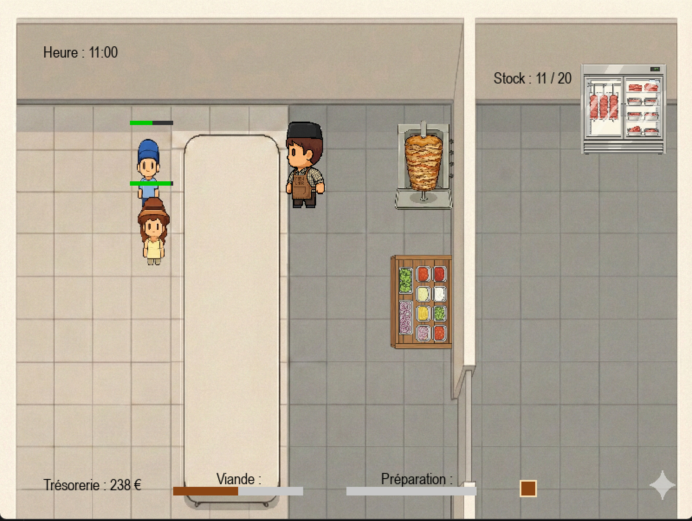
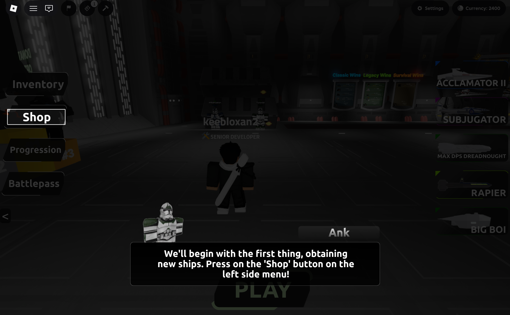
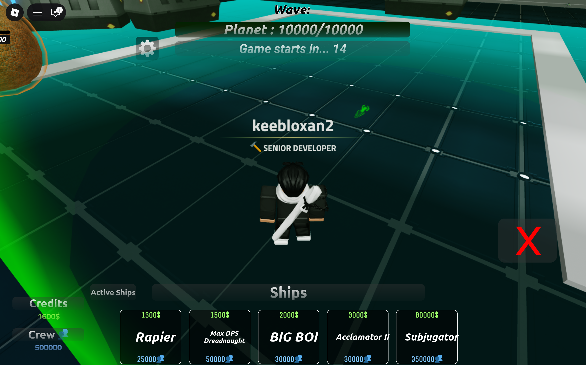

Passionné par le développement informatique depuis la 5e. J'aime transformer des problèmes concrets en solutions informatiques propres et efficaces.
Le projet consiste à partir d'une particule simple affichée à l'écran pour la faire évoluer vers un système capable de simuler différentes configurations physiques complexes. Le générateur implémente des collisions avancées entre particules en prenant en compte leur orientation, et pas uniquement leur position. La détection de collision repose notamment sur le théorème SAT (Separating Axis Theorem), couplé à des formules de dynamique pour gérer les réponses physiques réalistes. Afin d'améliorer l'interaction utilisateur, un panneau de configuration dynamique a été développé, permettant de modifier en temps réel les paramètres de la simulation (nombre de particules, vitesses, comportements, etc.).
Projet de simulation interactive visant à reproduire le fonctionnement d'un stand de kebab en temps réel. Le système gère les commandes clients, la préparation des ingrédients, les temps de cuisson et la gestion des priorités afin d'optimiser le flux de service. L'objectif était de modéliser une situation concrète à l'aide de structures algorithmiques efficaces et d'une logique événementielle claire.
Développement d'un système de tutoriel interactif destiné à accompagner les joueurs dans la prise en main du jeu SDS. Le tutoriel guide progressivement l'utilisateur à travers différentes mécaniques de gameplay à l'aide d'interfaces dynamiques, de déclencheurs événementiels et d'une logique modulaire pensée pour être facilement extensible. Une attention particulière a été portée à l'optimisation côté client afin de garantir fluidité et réactivité.
Ensemble de missions visant à analyser puis améliorer les performances de systèmes existants, aussi bien en termes de temps d'exécution que de consommation de ressources. Ces optimisations passent par la refonte d'algorithmes, la réduction des accès inutiles, une meilleure gestion de la mémoire et la simplification de certaines logiques métiers. L'objectif est d'obtenir des systèmes plus robustes, maintenables et scalables.
